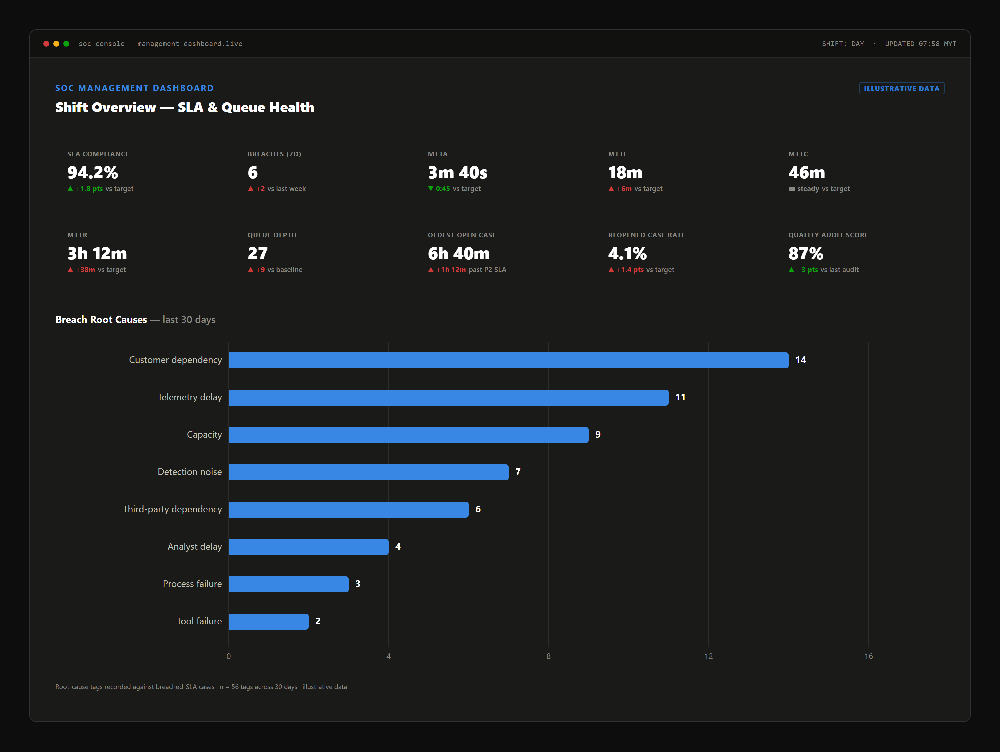

This is operational judgment, not a cited standard. The question: what belongs on a manager's screen in real time, to catch a problem before a customer does?
The compliance percentage is lagging, gameable, and quality-blind: it reflects only closed cases, a clock stopped early looks identical to one genuinely met (Section 8's Quadrant 2), and "on time" differs from "investigated well."
A compliance percentage says what already happened; the rows below tend to move before a breach shows up in it, while a case can still be acted on.
| Indicator | What it tells a manager |
|---|---|
| Current P1 / P2 case load | Pressure on the shift right now |
| Cases within ~20% of SLA deadline | Time to intervene, before the clock |
| Unassigned alerts | Nobody has started it yet |
| Oldest alert in queue | What an average age hides |
| Analyst workload imbalance | Whether the queue is even |
| Repeatedly-breached use cases | A detection-engineering fix, not an analyst one |
| Repeatedly-noisy detections | Burns time now, breaches later |
| Live customer dependencies | Delays the SOC can't fix |
| L2 / escalation queue depth | Whether the next tier is backed up |
| Shift-handover risk | Ambiguity near a shift boundary |
| Tool / pipeline health | Meaningless clock if detection lags |
| Staffing gaps, coming shift | Can the next shift absorb it |
| Live major incidents | Pulls resourcing outside SLA logic |
The mockup below assembles several tiles onto one dashboard; figures are synthetic, not a real measurement.

MTTA/MTTI/MTTC split the clock into the phase causing delay; Queue Depth, Reopened Case Rate, and Quality Audit Score do Section 8's job live — a rising reopen rate beside a green compliance number is Quadrant 2, in real time. Quality Audit Score itself isn't free to produce: a systematic case-audit or second-review program is a capacity line item — dedicated QA headcount, or a fixed, budgeted percentage of analyst time — not a tile that appears on the dashboard for free, and Section 12's staffing math has to carry it. The root-cause chart answers "why," not "how much": customer dependency and telemetry delay lead, pointing at contracts and pipelines, not the floor; only a small fraction — capacity, process/escalation failure — points back at the queue.
Section 8's grid argued compliance alone can't separate Quadrant 1 from 2, or Quadrant 3 from 4, since each pair reports identically. Every indicator here makes that separation possible during the shift, not in a retrospective audit.
SLA compliance answers one question: did it close on time. This section answers the only other one that matters: was that good news, or borrowed time?